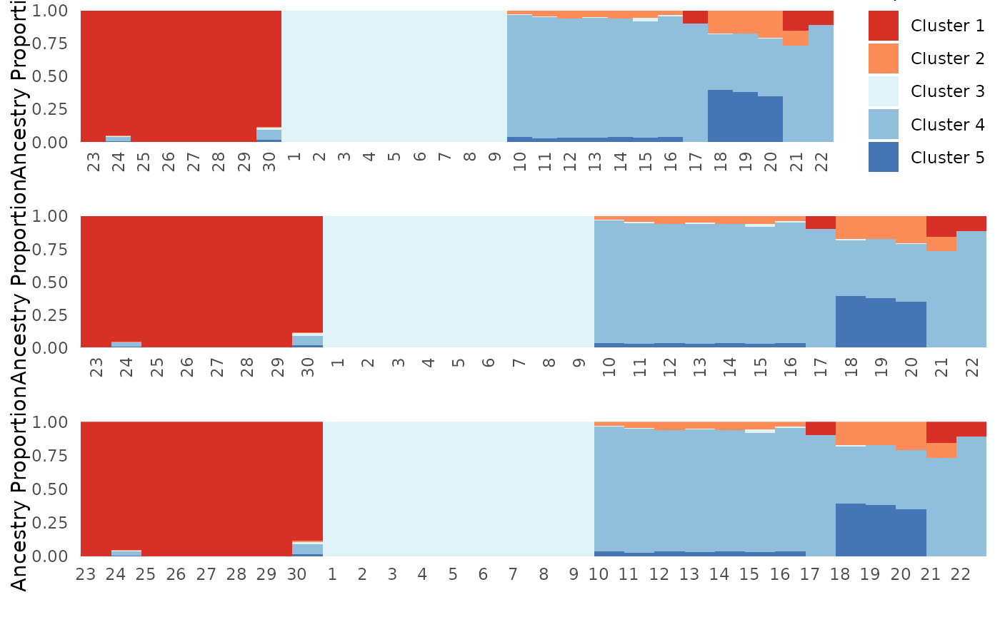

Formatting PopGenHelpR plots
Source:vignettes/articles/PopGenHelpR_plotformatting.Rmd
PopGenHelpR_plotformatting.RmdPurpose
This document containse examples of how to format
PopGenHelpR plots after they are generated, but still
within R.
How to format plots after they are made?
PopGenHelpR plots are created using ggplot2, which means
that we can modify them after the fact. Normally, this means modifying
the theme, where we can change font size, axis titles,
legends, and much more (see https://ggplot2.tidyverse.org/reference/theme.html for
ideas). We will go through a couple of examples to get you started.
Please reach out if you have any questions or need help.
Load the data and packages
# Load PopGenHelpR
library(PopGenHelpR)
library(cowplot)
library(ggplot2)
# Load data
data("Q_dat")
# First, we separate the list elements into two separate objects. The q-matrix (Qmat) and the locality information for each individual (Loc).
Qmat <- Q_dat[[1]]
Pops <- Q_dat[[2]]
Fst_dat <- PopGenHelpR::Fst_datWe will do this using the Ancestry_barchart output as an
example, but this can be done with any of the plots that
PopGenHelpR produces.
Base <- Ancestry_barchart(anc.mat = Qmat, pops = Pops, K = 5, col = c('#d73027', '#fc8d59', '#e0f3f8', '#91bfdb', '#4575b4'))
#> [1] "All information needed is present, moving onto plotting."
#> [1] "Want to change the the text size, font, or any other formatting? See https://kfarleigh.github.io/PopGenHelpR/articles/PopGenHelpR_plotformatting.html for examples and help."
No_legend <- Base$`Individual Ancestry Plot` + theme(legend.position = "none")
No_legend_lab <- Base$`Individual Ancestry Plot` + theme(legend.position = "none", axis.text.x = element_text(angle = 0))
plot_grid(Base$`Individual Ancestry Plot`, No_legend, No_legend_lab, ncol = 1)